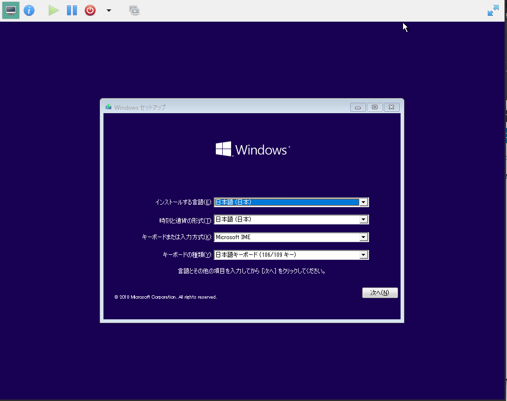

その１で共有GPUの確保と開放までができるようになりましたので、実際のゲストに適用してみます
ついでに？virt-managerでwindowsゲストをインストールする際のおすすめ設定の話とかも
QEMUゲストの設定
インストールメディアの準備
Microsoft公式のメディアクリエイターツールを使用するなりで、Windows10の最新ISOを入手してください
もう一つ、virtioドライバーディスクを使用するためvirtio driver isoを入手してください
windows driver isoはfedoraやubuntuが公開していますが、基本的にfedoraのもののほうが開発が活発ですのでfedoraのものを使用した方が良いと思います
2019-01-23現在の最新は1.1.60でした
設定のカスタマイズ
まずはvirt-managerから新規VMを選んでインストールを開始します
基本的にウィザードに従って(メモリやストレージ、ネットワーク等は個々の環境に合わせてお好みで)最後まで進めばOKですが、最後に「設定をカスタマイズする」にチェックを入れてください
概要
ここでBIOS(seabios)起動をするか、UEFI(OVMF)起動をするかを選択します。
2019-01現在、GVT-gデバイスはseabiosでしか表示が正しく動かないので、必ずBIOSを選択してください
CPU数
ここ、何気に重要なんですが、Windows 10 Pro/Home等では使用できるCPUソケット数に制限がかかっています
virt-managerで3コア以上の設定をすると、デフォルトで3ソケット1コア1スレッドの設定になってしまうため、windowsでは制限コアしか認識しなくなり、かつ後からトポロジーを変更してもwindowsが正しく認識してくれませんので、インストールからやり直しになります
そのため、この時点でトポロジーを手動設定して実CPUと同じに設定しておきましょう
後から「現在の割当」で減らす分には問題ないので、インストール時点ではその環境で使用できる最大CPU数を設定しておくと良いと思います
ストレージ
今回はvirtioを使用するため、ディスクの設定をデフォルトのSATAから変更します
詳細オプションから「SCSI」を選択します
ここで「virtio」を選択可能ですが、現在はレガシーな手法とされており、VirtIO SCSIコントローラを使用して制御するのが推奨されています
CDROM
「ハードウェアを追加」からCDROMドライブをもう一台追加し、先程用意したvirtioドライバのisoを設定します
NIC
「モデル」から「virtio」を選択します
ネットワークソースはNATなりブリッジなりmacvtapなりお好みで
ディスプレイ
android-x86の時にも設定しましたが、リッスンタイプを「なし」にして、「GLを開く」をONにして、レンダリングデバイスを設定します。
2019-01現在のvirt-managerのバグで、レンダリングデバイスを指定して「適用」してもデバイスが「自動」に戻ってしまうため、もう一度デバイスを設定して「適用」してください
コントローラ
「ハードウェアを追加」からVirtIO SCSIコントローラを追加します
ここで明示的に追加しないと、libvirtがlsilogicエミュレーションのコントローラを勝手に追加しますのでかならず明示的に追加してください
Windowsゲストのインストール
ここまで設定して「インスール開始」を選べばWindowsインストーラが起動ますので、指示に従ってインストールを開始してください。

VirtIOドライバのロード
インストール対象を選ぶ時点で、ストレージをVirtIOにしたので対象ディスクが出てこないはずです
ここで「ドライバーの読み込み」から第二CDROMに入れたvirtioドライバーディスクからSCSIコントローラドライバを読み込みます
ドライバを読み込めば、設定したディスクが一覧に出てくるはずです
この時点でネットワーク、グラフィック(QXL)、メモリバルーンのドライバーもロードしておきましょう
あとはインストーラーの指示に従ってインストールを進めていけば大丈夫です
インストールが完了したら、ゲストをシャットダウンして、いよいよGVTデバイスの設定に入ります
GVTデバイスの設定（第一段階）
ここからはvirshを使った作業に入ります。ユーザーからのvirshでは、virt-managerで登録したVMの参照ができないため、ここからはrootシェルでの作業になります1
$ sudo -s
hostdevの追加
virsh list –allで先程登録したVMの名前を確認し、virsh editで設定を開きます1
2
3
4
5
6# virsh list --all
Id Name State
------------------------
- win10 shut off
# virsh edit win10
該当VMのXMLが開いたら、videoタグを検索して、その下あたりに以下のようなタグを挿入します1
2
3
4
5
6<hostdev mode='subsystem' type='mdev' managed='yes' model='vfio-pci' display='off'>
<source>
<address uuid='ab8c3af8-8366-449d-8489-fe9254e44621'/>
</source>
<address type='pci' domain='0x0000' bus='0x00' slot='0x09' function='0x0'/>
</hostdev>
uuidはその１で決めたUUIDになります。addressのslotは他のデバイスと競合しない適当な値に設定してください
Intelドライバのインストール
タグを挿入後に設定を保存し、ゲストを起動してデバイスマネージャを開きます
しばらくするとWindowsがドライバを自動検索して追加したGVTデバイスにIntel HDドライバを割り当てます
もし自動で当たらない場合は手動でドライバの更新を行ってください
GVTデバイスにドライバが当たったらゲストをシャットダウンします
GVTデバイスの設定（第二段階）
再びvirshに入ります
XMLスキーマの変更
まず先頭のdomainタグに、XMLスキーマを追加します1
<domain type='kvm'>
を1
<domain type='kvm' xmlns:qemu='http://libvirt.org/schemas/domain/qemu/1.0'>
これでXML中にqemuのコマンドラインを直に設定できるようになります
標準VGAの無効化
まずvideoタグを検索し、1
2
3
4<video>
<model type='qxl' ram='65536' vram='65536' vgamem='16384' heads='1' primary='yes'/>
<address type='pci' domain='0x0000' bus='0x00' slot='0x02' function='0x0'/>
</video>
この部分をQXLからcirrusに変更します1
2
3
4<video>
<model type='cirrus' vram='16384' heads='1' primary='yes'/>
<address type='pci' domain='0x0000' bus='0x00' slot='0x02' function='0x0'/>
</video>
その後XMLの末尾、/deviceタグと/domainタグの間に以下の記述を追加します1
2
3
4<qemu:commandline>
<qemu:arg value='-set'/>
<qemu:arg value='device.video0.driver=ne2k_pci'/>
</qemu:commandline>
これはlibvirtの仕様で、graphicデバイスが設定されていると、必ず一つのビデオデバイスが追加されてしまうため、そのビデオデバイスに間違ったドライバを当てることであえてエラーを起こしてそのデバイスを無効化するというバッドノウハウです。
いずれlibvirtでmodel type=’none’が選択できるようになるかもしれません
GVTデバイスの有効化
qemu:commandlineタグに以下を追加します1
2<qemu:arg value='-set'/>
<qemu:arg value='device.hostdev0.x-igd-opregion=on'/>
これはintel IGD固有のオプションで、これを与えることで物理ディスプレイ出力を有効化します
GVTデバイスは物理ディスプレイに繋がっていませんが、これをONにすることでqemuのgraphicデバイスに接続可能になります
続いて、hostdevタグの中の1
<hostdev mode='subsystem' type='mdev' managed='yes' model='vfio-pci' display='off'>
のdisplayをonに変更します1
<hostdev mode='subsystem' type='mdev' managed='yes' model='vfio-pci' display='on'>
設定を保存しゲストを起動すればGVTデバイスをビデオデバイスとしたゲストが起動します
起動後の設定
virt-managerからゲストを起動すると、しばらくの間はdevice not readyということで表示されません。
GVTデバイスはBIOS ROMを持たないため、seabiosがフレームバッファを認識できないためです
しばらく待って、windowsのIntelドライバがGPUを掴めば表示されます
その１で確保したGVT_4デバイスはデフォルト解像度が1920x1200なので1920x1200以下のディスプレイで表示した場合、フルスクリーン表示したとしてもドット潰れが発生するため解像度を少し下げます
GVTデバイス自体が非力ですし、1900x1080のディスプレイであれば1366x768あたりが実用的な解像度でしょう
テスト
末代の住民としてはとりあえずまずこれをということでカスタムオーダーメイド３Dの体験版を起動してみました
画質設定はそれなりに落とす必要はありますがそこそこスムーズに動いています
もともとノートPCのIntel HDで動かすのは厳しいタイトルなのでスコアはお察しで
むしろ個人的には良くここまで動いてるなという感じです
同マシンの素のWindows環境と比べると大体７割ぐらいのスコアでしょうか
先日steamで購入した「ロロナのアトリエ」も動かしてみました
こちらはCOM3D2と比較すると相当軽いタイトルなのもあり、普通に遊べるレベルで動いています
このようにそこそこ軽いタイトルならば普通に遊べるレベルです
まとめ
最近になりやっと実用レベルで使えるようになってきたIntel GVT-g、openSUSE Tumbleweedならば比較的簡単に試すことができますので対応iGPUをお持ちの方はぜひ一度お試しください
付録
うちで動いているGVT環境のXMLを参考に貼っておきます1
2
3
4
5
6
7
8
9
10
11
12
13
14
15
16
17
18
19
20
21
22
23
24
25
26
27
28
29
30
31
32
33
34
35
36
37
38
39
40
41
42
43
44
45
46
47
48
49
50
51
52
53
54
55
56
57
58
59
60
61
62
63
64
65
66
67
68
69
70
71
72
73
74
75
76
77
78
79
80
81
82
83
84
85
86
87
88
89
90
91
92
93
94
95
96
97
98
99
100
101
102
103
104
105
106
107
108
109
110
111
112
113
114
115
116
117
118
119
120
121
122
123
124
125
126
127
128
129
130
131
132
133
134
135
136
137
138
139
140
141
142
143
144
145
146
147
148
149
150
151
152
153
154
155
156
157
158
159
160
161
162
163
164
165
166
167
168
169
170
171
172
173
174
175
176
177
178
179
180
181
182
183
184
185
186
187
188
189<domain type='kvm' id='3' xmlns:qemu='http://libvirt.org/schemas/domain/qemu/1.0'>
<name>win10-gvt1</name>
<uuid>9a210b7d-094c-4912-b624-600019bade4a</uuid>
<metadata>
<libosinfo:libosinfo xmlns:libosinfo="http://libosinfo.org/xmlns/libvirt/domain/1.0">
<libosinfo:os id="http://microsoft.com/win/10"/>
</libosinfo:libosinfo>
</metadata>
<memory unit='KiB'>4194304</memory>
<currentMemory unit='KiB'>4194304</currentMemory>
<vcpu placement='static'>4</vcpu>
<resource>
<partition>/machine</partition>
</resource>
<os>
<type arch='x86_64' machine='pc-q35-3.1'>hvm</type>
</os>
<features>
<acpi/>
<apic/>
<hyperv>
<relaxed state='on'/>
<vapic state='on'/>
<spinlocks state='on' retries='8191'/>
</hyperv>
<vmport state='off'/>
</features>
<cpu mode='custom' match='exact' check='full'>
<model fallback='forbid'>Skylake-Client-IBRS</model>
<vendor>Intel</vendor>
<topology sockets='1' cores='2' threads='2'/>
<feature policy='require' name='ss'/>
<feature policy='require' name='vmx'/>
<feature policy='require' name='hypervisor'/>
<feature policy='require' name='tsc_adjust'/>
<feature policy='require' name='clflushopt'/>
<feature policy='require' name='umip'/>
<feature policy='require' name='ssbd'/>
<feature policy='require' name='xsaves'/>
<feature policy='require' name='pdpe1gb'/>
<feature policy='disable' name='hle'/>
<feature policy='disable' name='rtm'/>
</cpu>
<clock offset='localtime'>
<timer name='rtc' tickpolicy='catchup'/>
<timer name='pit' tickpolicy='delay'/>
<timer name='hpet' present='no'/>
<timer name='hypervclock' present='yes'/>
</clock>
<on_poweroff>destroy</on_poweroff>
<on_reboot>restart</on_reboot>
<on_crash>destroy</on_crash>
<pm>
<suspend-to-mem enabled='no'/>
<suspend-to-disk enabled='no'/>
</pm>
<devices>
<emulator>/usr/bin/qemu-system-x86_64</emulator>
<disk type='file' device='disk'>
<driver name='qemu' type='qcow2'/>
<source file='/var/lib/libvirt/images/win10.qcow2'/>
<backingStore/>
<target dev='sda' bus='scsi'/>
<boot order='1'/>
<alias name='scsi0-0-0-0'/>
<address type='drive' controller='0' bus='0' target='0' unit='0'/>
</disk>
<controller type='usb' index='0' model='qemu-xhci' ports='15'>
<alias name='usb'/>
<address type='pci' domain='0x0000' bus='0x02' slot='0x00' function='0x0'/>
</controller>
<controller type='sata' index='0'>
<alias name='ide'/>
<address type='pci' domain='0x0000' bus='0x00' slot='0x1f' function='0x2'/>
</controller>
<controller type='pci' index='0' model='pcie-root'>
<alias name='pcie.0'/>
</controller>
<controller type='pci' index='1' model='pcie-root-port'>
<model name='pcie-root-port'/>
<target chassis='1' port='0x10'/>
<alias name='pci.1'/>
<address type='pci' domain='0x0000' bus='0x00' slot='0x03' function='0x0' multifunction='on'/>
</controller>
<controller type='pci' index='2' model='pcie-root-port'>
<model name='pcie-root-port'/>
<target chassis='2' port='0x11'/>
<alias name='pci.2'/>
<address type='pci' domain='0x0000' bus='0x00' slot='0x03' function='0x1'/>
</controller>
<controller type='pci' index='3' model='pcie-root-port'>
<model name='pcie-root-port'/>
<target chassis='3' port='0x12'/>
<alias name='pci.3'/>
<address type='pci' domain='0x0000' bus='0x00' slot='0x03' function='0x2'/>
</controller>
<controller type='pci' index='4' model='pcie-root-port'>
<model name='pcie-root-port'/>
<target chassis='4' port='0x13'/>
<alias name='pci.4'/>
<address type='pci' domain='0x0000' bus='0x00' slot='0x03' function='0x3'/>
</controller>
<controller type='pci' index='5' model='pcie-root-port'>
<model name='pcie-root-port'/>
<target chassis='5' port='0x14'/>
<alias name='pci.5'/>
<address type='pci' domain='0x0000' bus='0x00' slot='0x03' function='0x4'/>
</controller>
<controller type='pci' index='6' model='pcie-to-pci-bridge'>
<model name='pcie-pci-bridge'/>
<alias name='pci.6'/>
<address type='pci' domain='0x0000' bus='0x04' slot='0x00' function='0x0'/>
</controller>
<controller type='scsi' index='0' model='virtio-scsi'>
<alias name='scsi0'/>
<address type='pci' domain='0x0000' bus='0x05' slot='0x00' function='0x0'/>
</controller>
<interface type='bridge'>
<mac address='52:54:00:33:76:f0'/>
<source bridge='bridge0'/>
<target dev='vnet0'/>
<model type='virtio'/>
<alias name='net0'/>
<address type='pci' domain='0x0000' bus='0x01' slot='0x00' function='0x0'/>
</interface>
<serial type='pty'>
<source path='/dev/pts/2'/>
<target type='isa-serial' port='0'>
<model name='isa-serial'/>
</target>
<alias name='serial0'/>
</serial>
<console type='pty' tty='/dev/pts/2'>
<source path='/dev/pts/2'/>
<target type='serial' port='0'/>
<alias name='serial0'/>
</console>
<input type='tablet' bus='usb'>
<alias name='input0'/>
<address type='usb' bus='0' port='1'/>
</input>
<input type='mouse' bus='ps2'>
<alias name='input1'/>
</input>
<input type='keyboard' bus='ps2'>
<alias name='input2'/>
</input>
<graphics type='spice'>
<listen type='none'/>
<image compression='off'/>
<gl enable='yes' rendernode='/dev/dri/by-path/pci-0000:00:02.0-render'/>
</graphics>
<sound model='ich9'>
<alias name='sound0'/>
<address type='pci' domain='0x0000' bus='0x00' slot='0x1b' function='0x0'/>
</sound>
<video>
<model type='cirrus' vram='16384' heads='1' primary='yes'/>
<alias name='video0'/>
<address type='pci' domain='0x0000' bus='0x00' slot='0x01' function='0x0'/>
</video>
<hostdev mode='subsystem' type='mdev' managed='yes' model='vfio-pci' display='on'>
<source>
<address uuid='ab8c3af8-8366-449d-8489-fe9254e44621'/>
</source>
<alias name='hostdev0'/>
<rom bar='on'/>
<address type='pci' domain='0x0000' bus='0x00' slot='0x02' function='0x0'/>
</hostdev>
<redirdev bus='usb' type='spicevmc'>
<alias name='redir0'/>
<address type='usb' bus='0' port='2'/>
</redirdev>
<redirdev bus='usb' type='spicevmc'>
<alias name='redir1'/>
<address type='usb' bus='0' port='3'/>
</redirdev>
<memballoon model='virtio'>
<alias name='balloon0'/>
<address type='pci' domain='0x0000' bus='0x03' slot='0x00' function='0x0'/>
</memballoon>
</devices>
<qemu:commandline>
<qemu:arg value='-set'/>
<qemu:arg value='device.video0.driver=ne2k_pci'/>
<qemu:arg value='-set'/>
<qemu:arg value='device.hostdev0.x-igd-opregion=on'/>
</qemu:commandline>
</domain>